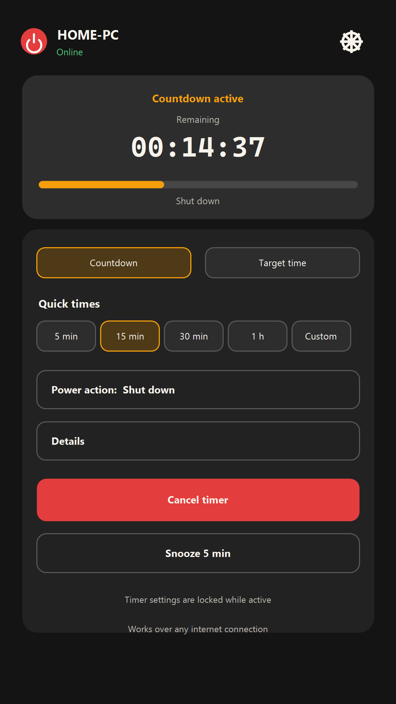
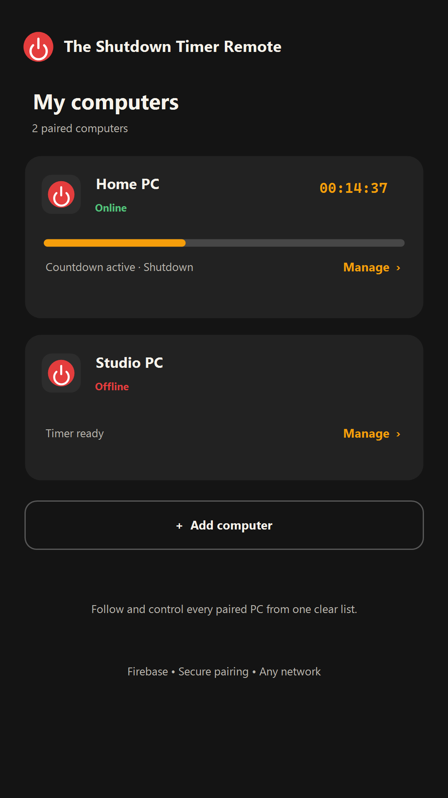
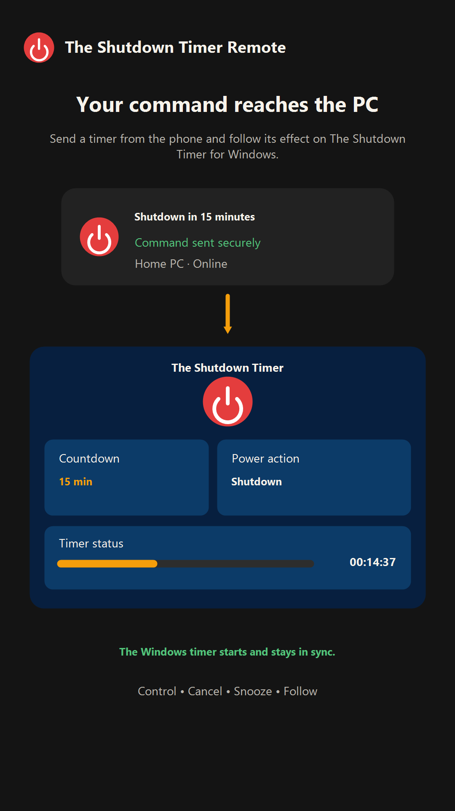

Güvenli ve kalıcı eşleştirme
Tek biçim: XXXX-XXXX. Kod yenilenene kadar geçerlidir; QR ile de bağlanabilir ve yeni bilgisayar ekleyebilirsin.
Windows için The Shutdown Timer'ı eşleştirme kodu veya QR ile bağla; birden fazla bilgisayarı farklı ağlardan izle, zamanla ve yönet.

Tek biçim: XXXX-XXXX. Kod yenilenene kadar geçerlidir; QR ile de bağlanabilir ve yeni bilgisayar ekleyebilirsin.
Aynı Wi‑Fi zorunlu değildir. Firebase üzerinden bilgisayar durumunu takip eder ve komut gönderir.
Aktif zamanlayıcıda ayarlar kilitlenir; iptal ve erteleme doğrudan bağlı bilgisayara gönderilir.


Windows uygulaması gerekir: Android uygulaması yalnızca Microsoft Store'daki The Shutdown Timer ile birlikte çalışır. Google Play bağlantısı yayınlandıktan sonra bu sayfaya eklenecektir.